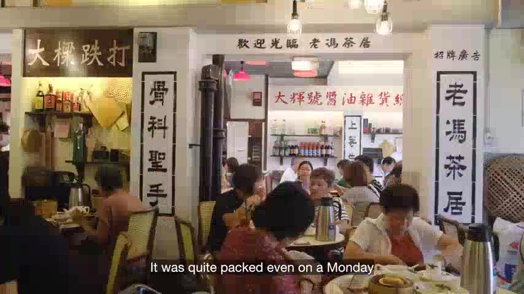
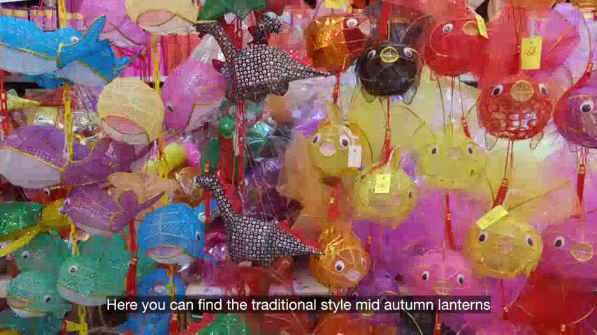
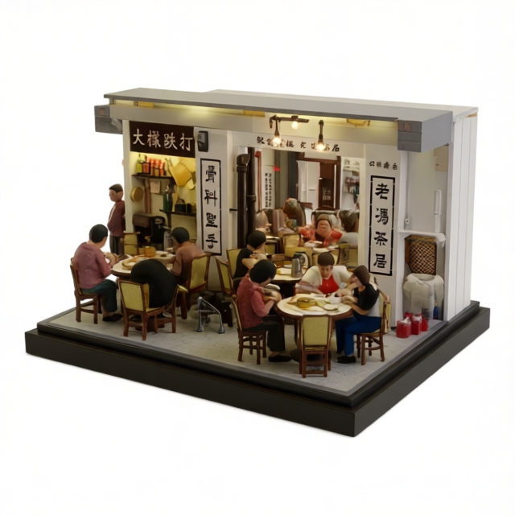
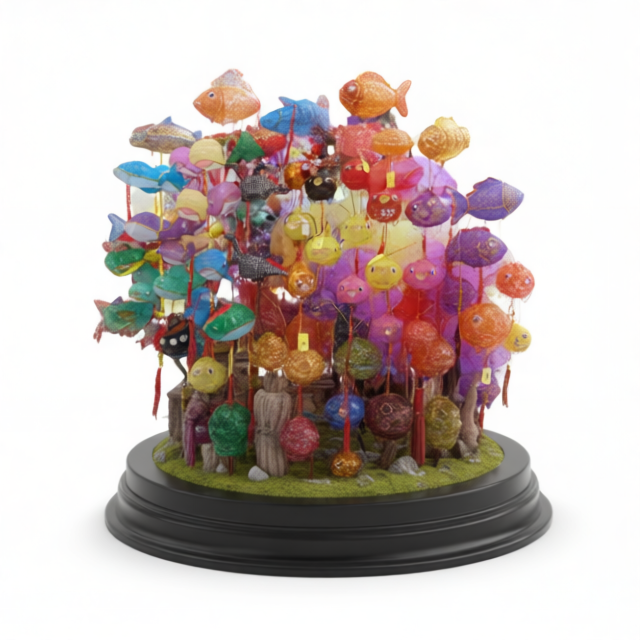

FROM A MOMENT TO A MEMORY
Start with a memory.
Make it your world.
A meal together. A street full of lanterns. Follow a Mid-Autumn journey from the original footage to two moments you can hold in 3D.
Local Qwen on NVIDIA DGX Spark
Source footage → selected scenes → generated miniatures
THE COMPLETED PIPELINE
You choose what stays.
- 01 / UNDERSTAND
Find the moments
Qwen3.6-27B runs locally on DGX Spark to read the footage and suggest scenes. Original frames stay beside the results for review.


- 02 / SHAPE
Choose a look
The saved selection uses a cinematic style. Local Qwen Image Edit turns the two source moments into references for generation.


- 03 / EXPLORE
Make it spatial
TRELLIS.2 generates textured meshes. Explore the originals on white, or revisit the separately curated animated scenes.
Open the finished generations ↗The coast and city journeys also use NVIDIA Omniverse for OpenUSD assembly and RTX previews.
These are saved outputs from local model runs. Generated hidden surfaces are inferred; the animated scenes are curated presentations.
MID-AUTUMN MEMORIES